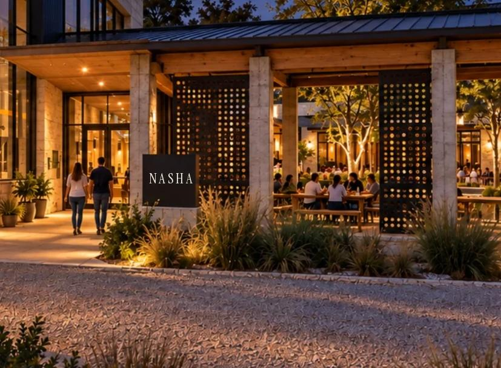

Experience
An evening at NASHA.
This is what the evening is designed to feel like, from the walk up to the last pour. It is a design, written in the conditional, because NASHA does not exist yet.
NASHA is in development. There is no brewery, no restaurant, no truck and no menu for sale yet. Images are concept visualizations and illustrations, not photographs of NASHA. Nobody has tested this evening.
01 Curiosity
Arrival
You would see the sign first, then warm light through glass, then the tanks.

02 Refreshment
The bar
A long bar, a wall of taps and a shelf of glasses, with the brewery in sight behind it.
03 Belonging
The table
Long tables for sharing. Plates go in the middle and glasses go round.
04 Hunger
The food
Fusion dishes and our own: Chicken 65 on masa chips, tacos, a braise, charred corn. All still being designed.
05 Refreshment
The beer
Light and crisp, wheat, toasty. Each beer is a brief with named dishes it is meant to meet.
06 Warmth
The fire
A tandoor and a comal in an open kitchen, so you can watch food meet fire.
07 Wonder
The brewery
Tanks behind glass: the slow work of fermentation, in view. Size and count are not decided.

08 Staying
The patio
A covered court under an oak, shade and fans for the heat, lights for the evening.

09 Wanting to come back
Night
By dusk the hall glows, the court fills, and nobody is in a hurry.

Before the hall, the test.
The path to this evening starts smaller: tastings, pop-ups, perhaps a brewery residency. Each step has to earn the next.